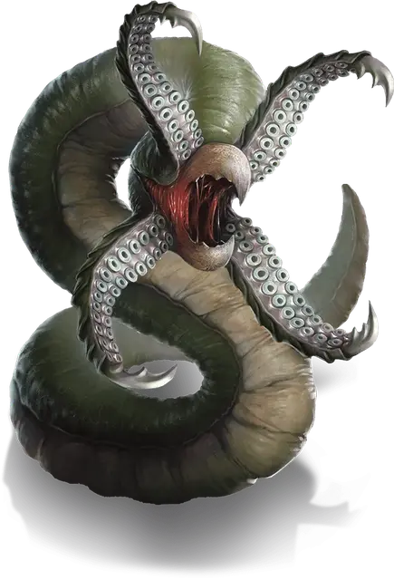

Грик
Grick
Средний Монстр, нейтральный

Класс Доспеха 14 (природный доспех)
Хиты 27 (6к8)
Скорость 30 футов, лазая 30 футов
| мод | спас | ||
|---|---|---|---|
| СИЛ | 14 | +2 | +2 |
| ЛОВ | 14 | +2 | +2 |
| ТЕЛ | 11 | +0 | +0 |
| мод | спас | ||
|---|---|---|---|
| ИНТ | 3 | −4 | −4 |
| МДР | 14 | +2 | +2 |
| ХАР | 5 | −3 | −3 |
Сопротивление урону дробящий, колющий, рубящий от немагических атак
Чувства тёмное зрение 60 футов, пассивное Восприятие 12
Опасность 2 (450 опыта)
Бонус мастерства +2
Среда обитания Лес, Подземье
Особенности
Каменный камуфляж. Грик совершает с преимуществом проверки Ловкости (Скрытность), когда пытается спрятаться на каменистой местности.
Действия
Мультиатака. Грик совершает одну атаку щупальцами. Если атака попадает, грик может совершить атаку клювом по этой же цели.
Щупальца. Рукопашная атака оружием: +4 к попаданию, досягаемость 5 футов, одна цель. Попадание: Рубящий урон 9 (2к6 + 2).
Клюв. Рукопашная атака оружием: +4 к попаданию, досягаемость 5 футов, одна цель. Попадание: Колющий урон 5 (1к6 + 2)
Описание
Похожий на червя грик остается невидимым, сливаясь с камнями пещер и туннелей, в которых обитает. Лишь при приближении жертвы он вскакивает, а четыре его колючих щупальца открывают голодный щелкающий клюв.
Пассивные хищники. Грики редко охотятся. Вместо этого их эластичные туши перемещаются в места, где постоянно проходят существа. Они скрываются среди каменных валунов и обломков, просачиваются в норы, отверстия и щели, взбираются на уступы или оборачиваются вокруг сталактитов, чтобы свалиться на неосмотрительную жертву. Грик поглощает практически что угодно, за исключением других гриков. Его целью является ближайшая жертва, повалив которую он хватает своими щупальцами и уносит, чтобы поесть в одиночестве.
Бродячие налетчики. Грики не меняют зону обитания, пока есть доступ к пище, который обычно прекращается, когда разумные существа узнают об их присутствии и составляют планы новых маршрутов в обход логова. Когда в Подземье жертв становится недостаточно, грики поднимаются на поверхность и охотятся в диких землях, взбираясь на деревья или скалистые уступы. Стаю гриков чаще всего возглавляет крупный откормленный альфа-самец, вокруг которого собираются остальные.
Трофеи убийств. Со временем в логовах гриков скапливаются ненужное имущество их разумных жертв, и умелые проводники могут это определить по явным признакам. Исследователи Подземья иногда запечатывают входы и выходы из логова гриков, моря их голодом, а затем забирая себе богатства глупых жертв.